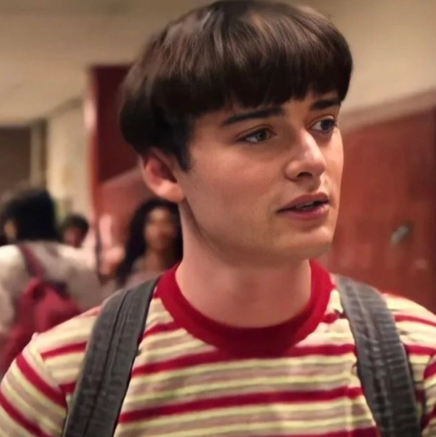
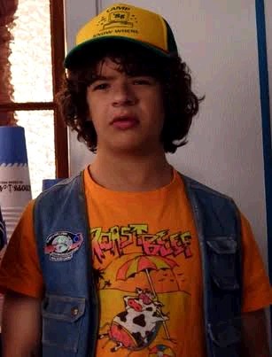
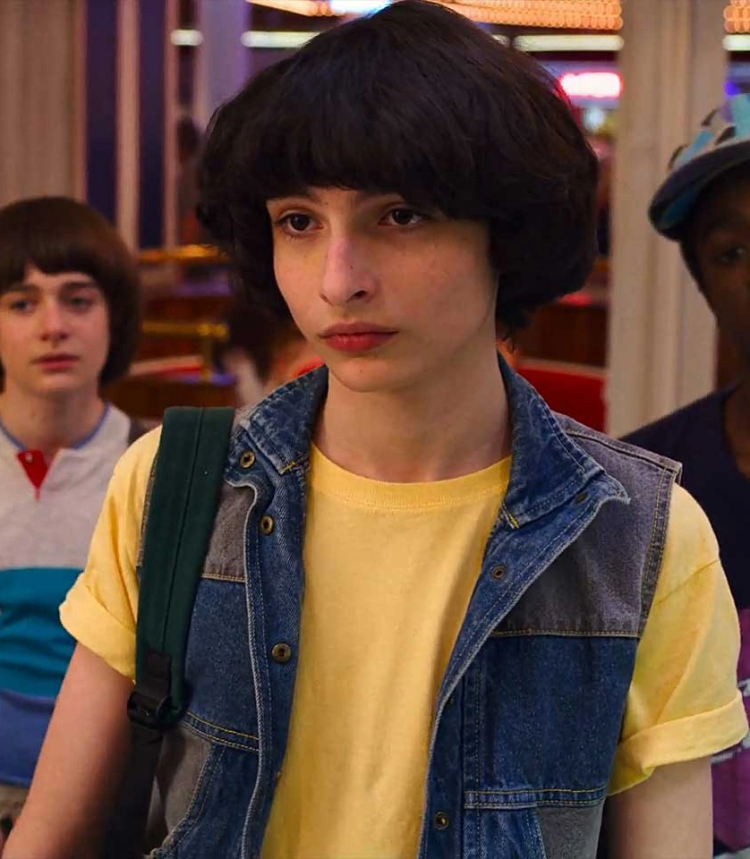
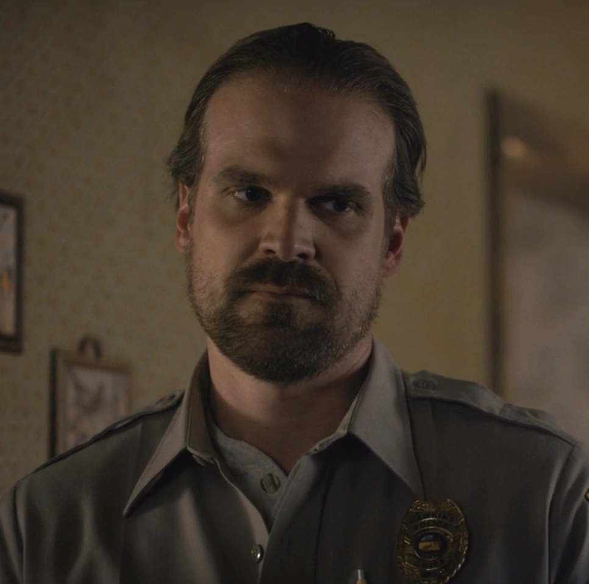
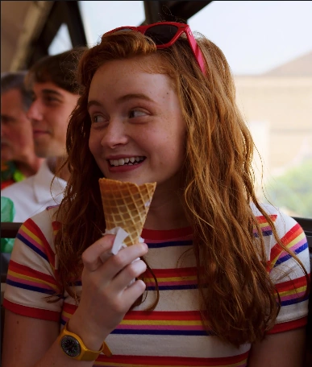
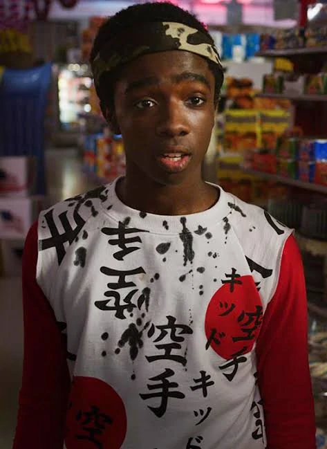

Personagens
Conheça mais sobre os personagens de Stranger Things:

Onze
Onze (realizado por Millie Bobby Brown)[16]; em seu idioma original se chama Eleven ou El; nasceu como Jane Ives, filha de Terry Ives, e cresceu nos Laboratórios Hawkins, onde foi experimentada por cientistas até o início da primeira temporada. Onze tem poderes telecinéticos e telepáticos, que lhe permitem controlar as coisas com sua mente. Ela escapou do laboratório e fez amizade com Dustin, Lucas, Will e Mike (seu interesse amoroso).[12] Na segunda temporada, Jim Hopper se tornou uma figura paterna para Onze enquanto ela procurava por sua mãe biológica, culminando com ela sendo adotada por Hopper no final da temporada e sendo chamada de Jane Hopper.[13] Na terceira temporada, ela está namorando Mike, para grande aborrecimento de Hopper, e é perseguida pelo Devorador de Mentes, que os soviéticos libertaram abrindo um portal para o Mundo Invertido. Depois que Hopper desaparece quando o portal é finalmente fechado, Onze lê um discurso que Hopper escreveu para controlar as coisas entre ela e Mike, mas ele nunca falou com eles sobre isso, em vez disso, dizendo a Mike para ficar longe de Onze por um tempo para impedi-los de verem um ao outro. Três meses depois, ela confessa a Mike que também o ama e deixa Hawkins com os Byers.

Will
William "Will" Byers (interpretado por Noah Schnapp), o irmão mais novo de Jonathan e filho de Joyce, é um menino gentil e muitas vezes tímido. No grupo de Dungeons and Dragons, Will é o clérigo, mas mais tarde ocasionalmente desempenha o papel de Dungeon Master; ele é referido como "Will the Wise". Na primeira temporada, ele desaparece em algum lugar perto de "Mirkwood" depois de encontrar o monstro que escapou por uma fenda para o "Mundo Invertido", uma dimensão alternativa descoberta pelos cientistas do Laboratório Hawkins.[21] Schnapp foi promovido a regular na segunda temporada, depois de recorrente na primeira[22] Na terceira temporada, as preocupações de seus amigos com suas namoradas levam Will a se sentir um estranho. Sua ligação com o Devorador de Mentes ajuda o grupo a saber quando ele está ativo. No final da temporada, ele sai de Hawkins com Joyce, Jonathan e Onze.[14][15] Na quarta temporada, Will começa a pintar para uma pessoa desconhecida, enquanto testemunha Onze sendo intimidada por Angela. Depois de confrontar Mike sobre seu relacionamento, os dois testemunham Onze bater no rosto de Angela em retaliação ao bullying. Depois de serem colocados em prisão domiciliar pelos agentes de Owens, eles são resgatados por Argyle. Depois de encontrar o número para NINA, eles procuram a ajuda da namorada de Dustin, Suzie, em Salt Lake City.

Dustin
Dustin Henderson (interpretado por Gaten Matarazzo)[16] é amigo de Mike, Will e Lucas, ele é um menino muito inteligente e estudioso e tem displasia cleidocraniana.[17] Em seu grupo de jogo do Dungeons & Dragons, Dustin é o bardo e tem provavelmente o maior conhecimento do jogo, particularmente em monstros. Ele tinha uma queda por Nancy Wheeler, enquanto ele e Lucas tinham sentimentos por Max na segunda temporada, mas Lucas e Max eventualmente acabam juntos. Ele se torna o melhor amigo de Steve Harrington na segunda temporada, que lhe dá conselhos sobre como fazer as garotas gostarem dele.[13] Antes da terceira temporada, Dustin passa um mês no acampamento de ciências e, graças ao conselho de Steve, conseguiu uma namorada chamada Suzie, que se diz uma gênia e é "mais sexy que Phoebe Cates". Os amigos de Dustin estão céticos se ela realmente existe, pois ele não consegue contatá-la através de sua torre de rádio improvisada. Em vez disso, Dustin descobre uma transmissão soviética embaralhada e vai para Steve com as informações em vez de seus amigos devido ao seu ceticismo sobre Suzie. Mais tarde, ele prova a existência de Suzie quando a contatou.

Mike
Michael "Mike" Wheeler (interpretado por Finn Wolfhard)[16] é filho de Karen e Ted, o irmão mais novo de Nancy e o irmão mais velho de Holly, e um dos três amigos de Will Byers. Mike é um estudante inteligente e consciencioso que está comprometido com seus amigos. No jogo de Dungeons & Dragons, Mike é o paladino e geralmente desempenha o papel de Dungeon Master. Ele desenvolve sentimentos românticos por Onze (ou On, como Mike e seus amigos preferem chamá-la). Na segunda temporada, é revelado que ele desenvolveu uma tendência mais rebelde, provavelmente decorrente da falta de Onze. Quando Onze reaparece, ele está feliz, mas com raiva de Hopper por mantê-la escondida no ano passado, embora mais tarde ele o perdoe. Um mês depois, os dois vão ao Baile de Inverno juntos e novamente se beijam.[12][13] No verão seguinte, os dois estão namorando, mas Hopper consegue separá-los, pois acredita que eles estão passando muito tempo juntos e que ele não daria um bom exemplo. Com a intromissão adicional de Max, Onze eventualmente termina com Mike, mas os dois voltam a ficar juntos. Mike foi sincero sobre amar Onze, e quase confessa a ela, mas luta para encontrar as palavras certas. Quando Onze vai morar com os Byers, Mike promete manter contato e agendar visitas para o Dia de Ação de Graças e o Natal. Onze diz a Mike que também o ama.

Hopper
Jim Hopper (interpretado por David Harbour)[9] também chamado de "Hop", é o chefe do Departamento de Polícia de Hawkins. Hopper viveu em Hawkins a maior parte de sua vida, tendo frequentado o ensino médio com Joyce e Bob. Hopper se divorciou depois que sua filha Sarah morreu de câncer, fazendo com que ele caísse no alcoolismo. Eventualmente, ele se torna mais responsável, salvando Will do Demogorgon e tomando Onze como sua filha adotiva..[12][13] Na 3ª temporada, ele tenta separar Onze e Mike, pois o relacionamento deles está indo rápido demais para ele, enquanto tenta conquistar Joyce romanticamente. Através de Joyce, ele mais uma vez se envolve em uma investigação sobre o sobrenatural, levando-os a descobrir uma conspiração soviética. Ele é dado como morto em uma explosão causada por uma máquina russa usada para abrir um portal para o Mundo Invertido. No entanto, ele de alguma forma sobreviveu à explosão e foi capturado pelos russos. Ele fica detido em um campo na Rússia, onde é forçado a construir uma ponte ferroviária para eles.

Max
Maxine "Max" Mayfield (interpretada por Sadie Sink) é a meia-irmã mais nova de Billy, uma skatista ávida e a moleca do grupo que chama a atenção de Lucas quando se sabe que ela tem a maior pontuação em Dig Dug.[23] Embora ela nunca tenha jogado Dungeons and Dragons, ela se chama de "zoomer" do grupo, apesar da insistência de Mike de que o termo é inventado. Ela afirma que o papel do "zoomer" é transportar o grupo de um lugar para outro. Max é frequentemente mostrado em desacordo com Billy. Na terceira temporada, ela e Lucas estão namorando após vários rompimentos. Onze se aproxima dela para pedir conselhos quando ela suspeita que Mike está mentindo para ela e Max a convence de que Mike pode ter feito isso para brincar com seus amigos. Max ajuda Onze a explorar o mundo exterior, tornando-se amigas íntimas. Ela também é mostrada como uma fã da Mulher Maravilha.

Lucas
Lucas Sinclair (interpretado por Caleb McLaughlin)[16] é amigo de Mike, Will e Dustin, e irmão mais velho de Erica. Lucas inicialmente desconfia de Onze, mas depois faz amizade com ela.[12] Na segunda temporada, ela se torna um interesse amoroso para Max. Em seu clube de Dungeons and Dragons, Lucas é o ranger. Ele é muito habilidoso com o uso de um estilingue, que o grupo chama de "The Wrist Rocket". Nas duas primeiras temporadas, o estilingue é usado para efeito cômico como uma defesa desesperada de última hora, mas na terceira temporada, é usado para salvar o time do perigo.
© Copyright 2022 Gabriel de Moraes da Rosa - All Rights Reserved